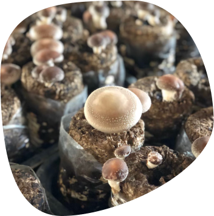
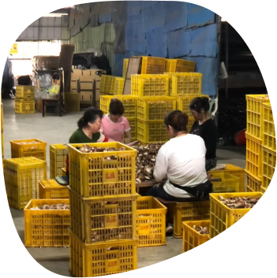
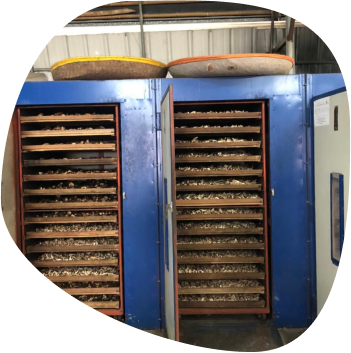

製作過程

香菇包
以栽培太空包為主，將適合種植香菇的木材切成細碎，再將混合好的材料裝進耐高溫又有伸縮性的聚丙烯塑膠袋，用塑膠環套住袋口並塞上棉花，加上基質營養成分，經高溫殺菌後，再將菌絲移入太空包中，並在適當的溫、濕度下栽培3至4個月的時間。

割紙
此步驟為菇農們的稱呼，因太空包無法使用機器開包，只能人工一個一個割開來，等到香菇的小芽點冒出來我們就會全部拉開。

蓋包及翻包
蓋包與翻包是模擬大自然中打雷的樣子，將太空包倒蓋一天一夜後翻回來。目的是要刺激太空包中的菌絲，而受到刺激的菌絲就會開始活動而開始長出香菇。而這是相當考驗體力的階段呢！


採收
在經歷割紙、翻包與蓋包等流步驟後，終於可以採收香菇了，菇農們將依據其外觀、大小及成色，判斷是否可以將香菇採收下來，並將香菇裝進一箱箱的檯子。

修剪
採收完的香菇，將由菇農及工人們進行修剪，將菇腳去除，留下香菇和菇頭，並進行大小分類，在此步驟，若不立刻整理、烘乾，香菇就會喪失新鮮度。

烘乾
一台台熱風烘乾機正隆隆作響，歷經20小時低溫烘乾（最高70度），累積的濃郁香氣隨爐門乍開傾洩而出，要立刻加以包裝才能封藏這香氣並確保乾燥。

包裝
因香菇怕潮濕，所以最後就是將烘乾後的香菇進行密封包裝，就成為你們現在手中所拿到的香菇啦!